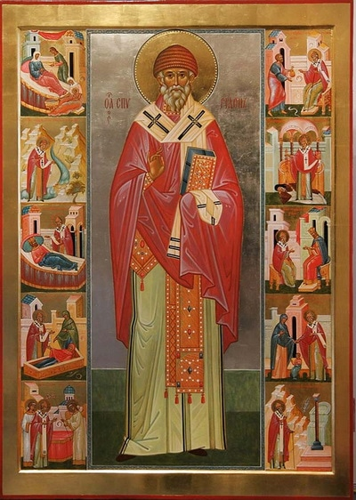

1 03 2011 (2265 дней 7 часов назад)
Краткое житие Святителя Спиридона Тримифунтского
Святитель Спиридон Тримифунтский родился в конце III века на острове Кипр. О его жизни сведений сохранилось мало. Известно, что он был пастухом, имел жену и детей. Все свои средства он отдавал на нужды ближних и странников, за это Господь вознаградил его даром чудотворения: он исцелял неизлечимо больных и изгонял бесов. После смерти жены, в царствование императора Константина Великого (306—337), он был избран епископом города Тримифунта. В сане епископа святитель не изменил своего образа жизни, соединив пастырское служение с делами милосердия. По свидетельству церковных историков, святитель Спиридон в 325 году принимал участие в деяниях I Вселенского Собора. На Соборе святитель вступил в состязание с греческим философом, защищавшим ариеву ересь. Простая речь святителя Спиридона показала всем немощь человеческой мудрости перед Премудростью Божией: «Слушай, философ, что я буду говорить тебе: мы веруем, что Всемогущий Бог из ничего создал Своим Словом и Духом небо, землю, человека и весь видимый и невидимый мир. Слово это есть Сын Божий, Который сошел ради наших грехов на землю, родился от Девы, жил с людьми, пострадал, умер для нашего спасения и затем воскрес, искупив Своими страданиями первородный грех, и совоскресил с Собою человеческий род. Мы веруем, что Он Единосущен и Равночестен со Отцем, и веруем этому без всяких лукавых измышлений, ибо тайну эту постигнуть человеческим разумом невозможно»

результате беседы противник христианства сделался его ревностным защитником и принял святое Крещение. После разговора со святым Спиридоном, обратившись к своим друзьям, философ сказал: «Слушайте! Пока состязание со мною велось посредством доказательств, я выставлял против одних доказательств другие и своим искусством спорить отражал все, что мне представляли. Но когда, вместо доказательства от разума, из уст этого старца начала исходить какая-то особая сила, доказательства стали бессильны против нее, так как человек не может противиться Богу. Если кто-нибудь из вас может мыслить так же, как я, то да уверует во Христа и вместе со мною да последует за этим старцем, устами которого говорил Сам Бог».
На том же Соборе святитель Спиридон явил против ариан наглядное доказательство Единства во Святой Троице. Он взял в руки кирпич и стиснул его: мгновенно вышел из него вверх огонь, вода потекла вниз, а глина осталась в руках чудотворца. «Се три стихии, а плинфа (кирпич) одна,— сказал тогда святитель Спиридон,—так и в Пресвятой Троице — Три Лица, а Божество Едино»
Святитель с большой любовью заботился о своей пастве. По его молитве засуха сменялась обильным животворящим дождем, а непрерывные дожди — вёдром. исцелялись больные, изгонялись демоны.
Однажды к нему пришла женщина с мертвым ребенком на руках, прося заступничества святого. Помолившись, он вернул младенца к жизни. Мать, потрясенная радостью, упала бездыханной. Но молитва угодника Божия вернула жизнь и матери.
Как-то, спеша спасти своего друга, оклеветанного и приговоренного к смерти, святитель был остановлен в пути неожиданно разлившимся от наводнения ручьем. Святой приказал потоку: «Стань! Так повелевает тебе Владыка всего мира, дабы я мог перейти и спасен был муж, ради которого спешу». Воля святителя была исполнена, и он благополучно перешел на другой берег. Судья, предупрежденный о происшедшем чуде, с почетом встретил святого Спиридона и отпустил его друга.
Известен из жизни святителя и такой случай. Как-то он зашел в пустую церковь, повелел возжечь лампады и свечи и начал Богослужение. Провозгласив «Мир всем», он и диакон услышали в ответ сверху раздавшееся великое множество голосов, возглашающих: «И духови твоему». Хор этот был велик и сладкогласнее всякого пения человеческого. На каждой ектении невидимый хор пел «Господи, помилуй». Привлеченные доносившимся из церкви пением, к ней поспешили находившиеся поблизости люди. По мере того, как они приближались к церкви, чудесное пение все более и более наполняло их слух и услаждало сердца. Но, когда они вошли в церковь, то не увидели никого, кроме епископа с немногими церковными служителями, и не слыхали уже более небесного пения, от чего пришли в великое изумление.
Святой Симеон Метафраст, описатель его жития, уподоблял святого Спиридона патриарху Аврааму в добродетели гостеприимства. «Надобно знать и то, как он принимал странников»,— писал близкий к монашеским кругам Созомен, приводя в своей «Церковной истории» удивительный пример из жизни святителя. Однажды по наступлении Четыредесятницы в его дом постучался странник. Видя, что путник очень утомлен, святой Спиридон сказал дочери: «Обмой-ка ноги этому человеку, да предложи ему поесть». Но ввиду поста не было сделано нужных запасов, ибо святитель «вкушал пищу только в определенный день, а в прочие оставался без пищи». Поэтому дочь ответила, что в доме нет ни хлеба, ни муки. Тогда святой Спиридон, извинившись перед гостем, приказал дочери поджарить бывшее в запасе соленое свиное мясо и, усадив за стол странника, принялся за трапезу, «убеждая того человека подражать себе. Когда же последний, называя себя христианином, отказался,—тот прибавил: «Тем менее надобно отказываться, ибо Слово Божие изрекло: Вся чиста чистым (Тит. 1, 15)»
Все житие святителя поражает удивительной простотой и силой чудотворения, дарованной ему от Господа. По слову святителя пробуждались мертвые, укрощались стихии, сокрушались идолы. Когда в Александрии патриархом был созван Собор ради сокрушения идолов и капищ, по молитвам отцов Собора пали все идолы, кроме одного, самого почитаемого. Патриарху в видении было открыто, что идол этот остался для того, чтобы быть сокрушенным святителем Спиридоном Тримифунтским. Вызванный Собором святитель сел на корабль, и в тот момент, когда корабль пристал к берегу и святитель ступил на землю, идол в Александрии со всеми жертвенниками повергся в прах, чем возвестил патриарху и всем епископам приближение святителя Спиридона.
В праведности и святости прожил святой Спиридон земную жизнь и в молитве предал душу свою Господу (ок. 348 года). В истории Церкви святитель Спиридон почитается вместе со святителем Николаем, архиепископом Мирликийским.
Мощи его покоятся на острове Корфу (Греция) в церкви его имени.
* * *
Чудо cвятого Спиридона Тримифунтского
Знаменитый оптинский старец иеромонах Амвросий, обладавший при жизни даром прозорливости и после преставления канонизированный Русской Православной Церковью, в одном из своих писем к духовным чадам упоминает о труднообъяснимом для атеистов чуде, свидетелем которого стал великий русский писатель Николай Васильевич Гоголь. Последний, как и многие другие русские литераторы и философы (Достоевский, братья Киреевские, Константин Леонтьев, Сергей Нилус, Лев Толстой и т.д.), часто посещал Оптину пустынь - обитель, являющуюся одним из главных духовных центров России, где писатель имел своего духовного отца
Будучи в очередной раз в Оптиной, Николай Васильевич рассказал своему духовнику и всей монашествующей братии о чудесном явлении, которое произошло на его глазах во время заграничного путешествия
Случилось оно при паломничестве его к святым мощам угодника Божия святого Спиридона Тримифунтского В отличие от мощей Николая Угодника, покоящихся ныне в итальянском городе Бари и источающих благоуханное миро, мощи святого Спиридона Тримифунтского обладают совершенно уникальными свойствами: мало того, что они остаются нетленными на протяжении целых столетий, они еще к тому же продолжают сохранять и мягкость, свойственную обычному живому человеческому телу.
В тот день, когда Гоголь приехал на поклонение святому, верующие, как это заведено каждый год 12 (25 по новому стилю) декабря, с большой торжественностью обносили святые мощи вокруг города. При этом все присутствующие обычно благоговейно и трепетно прикладываются к ним. Однако на этот раз среди них находился некий английский путешественник, естественно, взращенный на скепсисе и рационализме протестантской культуры. Он позволил себе заметить, что, по всей видимости, в спине угодника сделаны надрезы и тело тщательно набальзамировано. Чуть позже он подошел к мощам поближе. Каково же было его граничащее с ужасом изумление, когда мощи святого на глазах у всех... медленно приподнялись из раки и обратились своею спиной именно к этому «идейному» наследнику апостола Фомы, прозванного «неверующим»: на, мол, дружок, поищи-ка «свои» надрезы! Какова дальнейшая судьба этого достопочтенного британца, к сожалению, неизвестно. Гоголя же это чудо потрясло до самых глубин души.
* * *